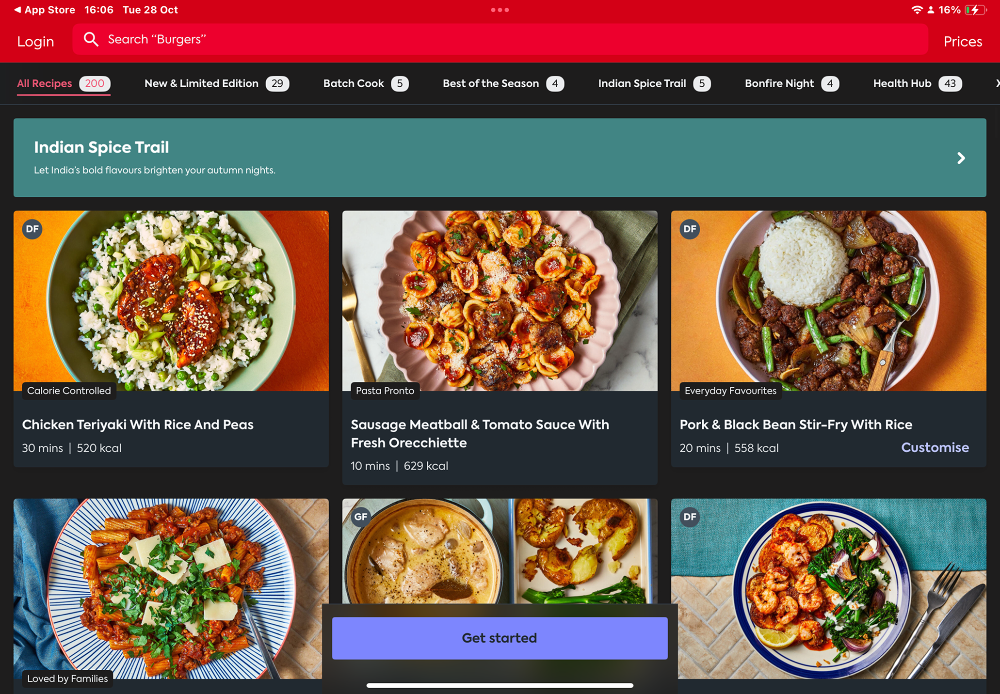

PROJECT SPECIFICATIONS
-
The time it took for this project was 9-12 Weeks.
-
Software used for this project: Figma and After Effects
-
This was a Figma based project, I had to create a working Prototype.
-
The target audience was 8-14 year olds.
The Brief
The brief was to design an interactive digital experience that communicates one or more of the United Nations Sustainable Development Goals (SDGs) in a clear, engaging way. For this project we had to create the following
- A Branded home screen
- One SDG chosen that was designed specifically for a 10-year-old audience
- A Style Guide
- A working prototype, made in Figma
The Problem
The SDGs contain important yet complex, text-heavy information that is aimed primarily at adults. This causes a gap to be created for younger audiences. Specifically children, who struggle to engage with or understand sustainability meaningfully. This is important because early education affects long term behaviour. if children can learn to be more sustainable, and develop healthy habits through interaction, rather than through dense content, SDGs like Zero Hunger can become more practical, relatable and memorable rather than be hard to understand or care for.
CONSTRAINTS
This project was to have a brand, a home screen, an SDG specifically aimed towards children which proved to be the hardest part, as it was something I’ve never had to do as a designer, so this project pushed me out of my comfort zone. I also had to create a style guide, and a functioning prototype on Figma. The deliverables needed to show sustainability based content to a younger audience, with the assumption of Adult supervision, whilst remaining practical, within the project scope.

Process
After learning what the project was asking me, I did some research and explored multiple SDG Concepts, before eventually deciding on Zero Hunger, As food waste is an issue that children can be taught to stop doing at home. I looked into popular cookbook apps like BBC Good Food and Gousto, To Identify features such as ingredient filtering, step by step recipes, and portion calculators. These features help my design by informing me of decisions such as large imagery, minimal text and clear task progression to reduce cognitive load

I then moved on to create a user persona with AI. This helped me to ground decisions around language, colour, interaction and the tone of voice, as I looked back to the persona throughout development. Design decisions were supported by feedback, for example. Nutritional data was changed to hide behind a dropdown after I had received some feedback highlighting the risk of overwhelming or inappropriate information, especially if it is aimed at children. I used micro-interactions like a bouncing loading icon, animated components, and visual cooking steps to engage with the user and to reinforce learning through play rather than instruction.

OUTCOME
In the end, the final outcome was Scran. A playful, illustrated baking app that teaches children how to reduce food waste through simple recipes like banana bread, The prototype includes a questionnaire based on your skills as a baker, recipes that are easy to follow, and an ingredient-reuse feature called Sue Chef. The design successfully balanced education and fun, but the app could be pushed further.
REFLECTION
I enjoyed this project. It was a challenge at the start, as I had never designed for a younger target audience before, but through research and feedback, I got there in the end. If I could continue the project, I would refine accessibility features, such as having a dyslexia-friendly font. This project helped me develop my approach to UX, making me prioritise the target audience's needs, safety and cognitive load earlier in the project.
READ NOTES ON MY NOTION